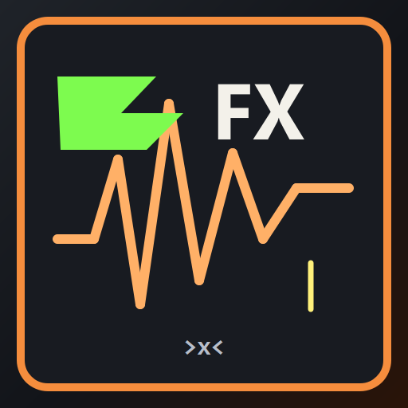

Mobile Ambient Engine
➕ Add New Layer
Select a short WAV file to add as a track
Stretch Factor: How much the audio is slowed down and smeared. Higher means longer and more ambient.
Reverb: Simulates the acoustics of a physical space. Adds depth and a "cavernous" feel.
Shimmer: A pitch-shifted reverb tail (one octave up) that creates a glowing, angelic sound.
Lowpass Filter: Cuts off high frequencies. Lower values make the sound darker and more muffled.
Drive / Distortion: Adds warmth, saturation, and aggressive harmonics.
Bitcrush: Reduces audio quality for a crunchy, lo-fi, and retro 8-bit aesthetic.
Sub Bass: Adds a heavy, octave-down bass layer to give drones massive weight.
Vinyl Texture: Adds a bed of noise and soft volume fluctuations for a lo-fi analog feel.
Granular Smear: Randomly chops and scrambles tiny grains of audio for a chaotic, glitchy effect.
Tremolo: Modulates the volume up and down rhythmically, creating a pulsing or floating feel.
Tremolo Motion: Rhythmic volume pumping and panning.
Ethereal Bloom: A combination of heavy lowpass and massive shimmer/reverb for an airy pad sound.
Delay: Echoes the audio signal, creating rhythmic repeats.
Chorus: Duplicates the sound with slight pitch detuning for a thicker, wider sound.
Phaser: A swirling, sci-fi sweeping effect over the audio.
Stereo Width: Expands the left and right channels to make the sound feel massive.
Auto-Pan: Moves the sound rhythmically between the left and right speakers.
Pitch Drift: Gently bends the pitch up and down like an old, worn-out cassette tape.
Reverse / Freeze: Plays the audio backward, or freezes it into an infinite loop.
Infinite Generative Mode: Creates a seamless eternal loop by crossfading the start and end of the audio. Also applies a slow, evolving automation to the filter to make the soundscape breathe over time.
Layers (Multitrack): You can add multiple audio files as separate layers. Click a layer to select it, and all sliders will apply only to that specific layer. When you process them, they will all play together in the Mixer!